In the summer of 2015 I decided that my next aeromodelling project should be to build a scale model De Havilland 82A Tiger Moth from plan. On Saturday 1st August I downloaded a plan from Outerzone for a 1/7th scale (50" wingspan) Tiger Moth. It is an old design by Harold Towner, appearing in the March 1972 issue of Aeromodeller and being designed for a 5 to 8cc IC engine (or 2.5 to 3.5cc engine for a free flight version). The plan contains a lot of scale detail, leaving it to the builder as to how much of that detail is included. However, neither the plan nor the instruction make any suggestion as to how the controlls should be installed, again leaving it to the builder.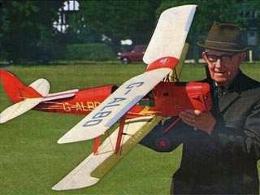
The top photo is the Tiger Moth (G-ANMY) on which I hope to base the livery of my model. The lower photo shows Harold Towner with a completed model. Something that I aspire to.
The Plan
During the latter half of September I imported the plan into Apple Numbers, printed all the A4 pages that make up the plan, trimmed them and glued them together to form the two sheets. Then I had to work out how I was going to build it and which real plane I was going to try to copy.
The build instructions published in the Aeromodeller amount to three columns of text and point out that there is no mention of receiver or servos on the plan since it would depend upon the equipment being used. Also, I wanted to convert the model to be powered by an electric motor and so needed to design a mount for the motor and locations for battery and ESC.
Looking around at published photos of Tiger Moths I discovered G-ANMY (see photo above). Not only is the livery relatively simple, but there is a wealth of photographs, including a lot of detail. G-ANMY was built in 1942 and is painted in Military Silver. According to the Tiger 9 web site "Tiger Moth, G-ANMY is group owned, with all seven members working for EasyJet."
Planning
As mentioned above, two areas need to be resolved; how to mount an electric motor with the associated ESC and battery; how to mount the servos and connect them to the control wires.
Electrification
Following the web page Propeller Static & Dynamic Thrust Calculation we can calculate that an rpm of 8,500 is needed for a 10x6 prop so as produce a thrust of 5lb and to achieve a speed of 10m/s. At 11.1 volts, this is a kv of 766. The article Choosing an Electric Flight Power System suggests that a power of 40W per pound should be suitable. The instructions with the plan say that the model should have a weight of about five pounds. So a motor giving 200W should be suitable.
The engine bearers, as shown on the plan, can be shortened at the front so that a motor-mount plate (made from 3/16" ply) can be fixed to them. The motor-mount plate can then be fixed square, both horizontally and vertically. It may need an additional piece of ply that fixes the motor-mount to the firewall. The motor offset can then be achieved using washers. Washers can also be used to move the motor nearer to the front as required.
The top part of the firewall can have a hole cut in it so that the battery can lie behind the motor, under the top of the cowl and up to the dashboard. It will need Velcro at the end (on the back of the dashboard) and some means of restraining the battery. This should get the battery as close to the CofG as possible. However, it will be necessary to remove the cowl in order to insert/remove the battery. The ESC can be mounted below the motor, in the lower part of the nose.
A receiver arming switch can be mounted underneath, between the wheels, fixed to the underside of the front of the centre frame, perhaps on a piece of 1mm ply.
Controls
On the plan, the two sides of the central frame are only joined by the three brackets. However, the rudder bars will need to be attached to ply plates fixed to the central frame.
Initial thoughts are as follows:
- Elevator servo: This could be mounted on its side in the luggage compartment. This requires a suitable mounting plate. The servo horn sits between pilot elevator control and the elevator horn. However, the servo horn needs two wires going to the elevator horn, which might be obstructed by the other servos. I need to choose a distance from the centre of the servo such that the elevator moves up and down 15 degrees.
- Rudder servo: The rear rudder bar was limited to a rotation of only a couple of degrees in either direction! However, we really want the servo to use its full movement and want the rudder to move 15 degrees either side of the straight-ahead position. So I lowered both rudder bars so that it had more movement. I may be able to mount the rudder servo upsidedown, behind the elevator servo.
- Aileron servo: The aileron control lever is limited to a rotation of only a few degrees in either direction. However, we really want the servo to use its full movement. So I calculated from the plan the required up and down movement of the ailerons and added a crank on the side of the central frame. The aileron servo can then go on its side, opposite the elevator servo.
And I still need to find somewhere for the receiver. Somewhere that is as far away from the motor as possible.
Go to topMaterials
I decided to buy most of the wood and piano wire that I would need to build the Tiger Moth. So I listed the sizes and types of material and estimated how much I would need. I then priced up the list using the prices on the web site of my local model shop and from the SLEC web site (www.slecuk.com). The latter turned out to be considerably cheaper, even including delivery. Although I could get a club discount at the local shop, SLEC gave a discount for spending more than £60, which brought the cost (with delivery) down to just under £60.
So I placed an order on January 5th 2016 (already nearly six months after my decision to build a Moth), with the wood and wire arriving within two days; and the quality seems to be good. However, I still need many other components and materials in order to complete the model. Some things, like wheels, motor, prop, ESC and battery, I will need to buy. Other materials, such as pieces of aluminium sheet and tin plate, I can find from scraps and tin cans.
Go to topFuselage
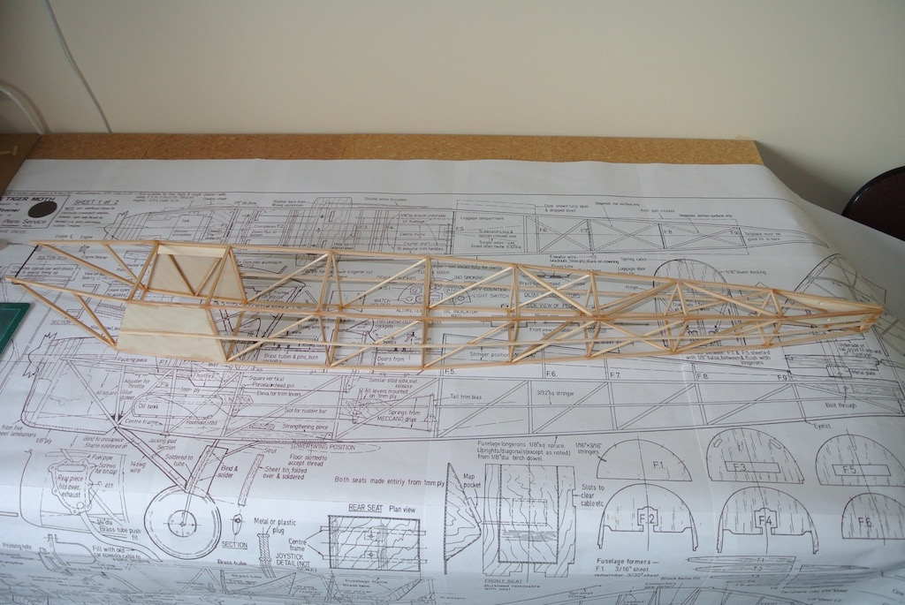Following the instructions from the Aeromodeller article, I started by building the two sides of the fuselage and joined them together. This structure, below the rounded top formers, is made entirely of spruce stringers and square spruce or hardwood dowel. The use of round section material mirrors the actual construction of a Tiger Moth.
In the photo, the front of each side is pulled inwards using a piece of wire to hold them temporarily in place, but it does not include the cross braces at the rear of the central frame or the strengthening pieces above the section where the wing connecting tongue cuts through the lower stringers.
Central Frame
The central frame holds the linkages between the joysticks (and their linkage to the rudder and ailerons) and the base for the seats. The plan did not include the slots needed for the rudder bar, nor the mounts for the two rudder bars, so I added both.
The linkage between the joysticks is made of brass tubes and a steel rod that need to be soldered together. I could not get soft solder to work on the steel, so used silver solder.
The plan seems to show the aileron control lever in one position in one view (the one to the left) and the slot through which it passes in a different position in the plan view of the fuselage! Also, it does not show how long to make the lever, but the position of the connecting wires on the wings plan seems to be level with the fuselage floor!
So it is a case of building what is shown, modifying it and adding to it as I go along. Note the lack of any details of the two rudder bars. Two views of the bars (without their fixings) are shown elsewhere on the plan. My plan is to drive the aileron control lever from a servo using a crank and connect the rear, elevator levers to a servo that will then connect to the elevator via wires. The rear rudder bar will also be driven from a servo. I just have to design the mounting for the three servos and the linkages so as to get the required control surface throw from a full-range servo movement. The servos will be located in the lugage compartment and further back as necessary. Hopefully this will counteract forward weight due to the battery.
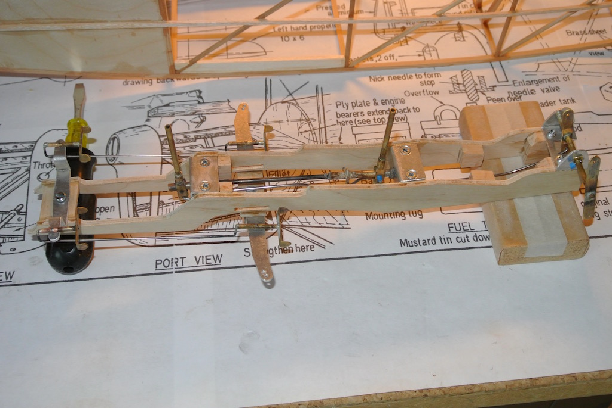It took nearly three months to complete the central frame, from the beginning of April to June 23rd. It is shown in the photo before fitting it into the fuselage. Rather than glue it in place I would rather screw it so that I have the chance of removing it to make alterations or repairs. It will also need to be painted to match the cockpit colour of G-ANMY. Other things got in the way. We had a visit from our daughter and her family (from California) and I did some major work on my MG. So only the occassional half day or half hour was spent on the Moth.
The joysticks move as the elevator and ailerons move and the rudder foot pedals move as the rudder moves. At least, that is the intent. The joysticks and foot pedals are made from brass tube, which are silver soldered on to piano wire. Where a flat piece of brass was required I flattened a piece of tubing. Brackets and rudder bars were cut from scrap aluminium sheet. In the photo the frame is resting on a screwdriver and a sanding block since the aileron lever protrudes below the frame.
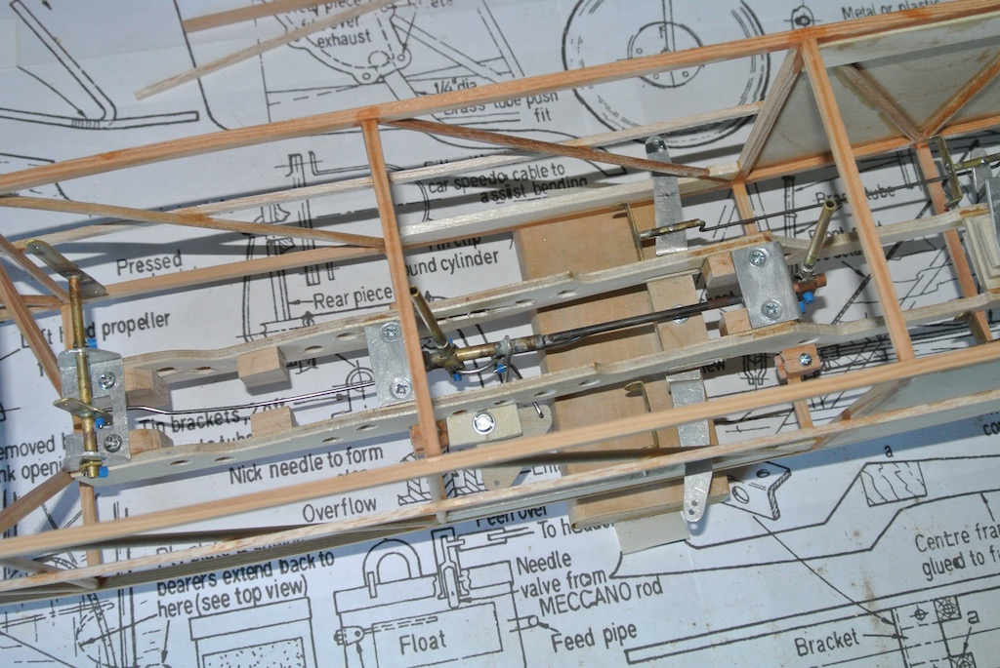This photo shows the central frame screwed into the fuselage via small 'tabs' glued to the side of the frame and on to the fuselage cross members. Note the holes that I have drilled in the sides of the frame so as to reduce its weight. You can also see the crank (made from 1mm ply) that I have added for the aileron linkage. However, getting this far (it is now approaching the end of August 2016) has taken another two months! Again due to time spent on other things.
Cabane
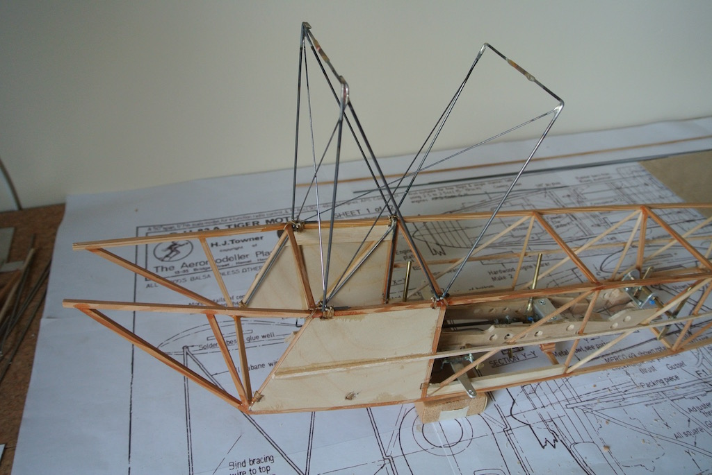Time spent on the Moth has definitely been minimal. I started making the cabane from 16 swg piano wire in September, but had trouble with the wire breaking when I tried to make the sharp right-angled bends that fit over the top longerons. I tried heat treating the wire (annealling, bending, hardening and tempering), but it was only partially successful. I bought some new lengths of piano wire and concluded that the original wire was faulty, since the new wire bent without breaking or needing heat treatment. Anyway, it is now November.
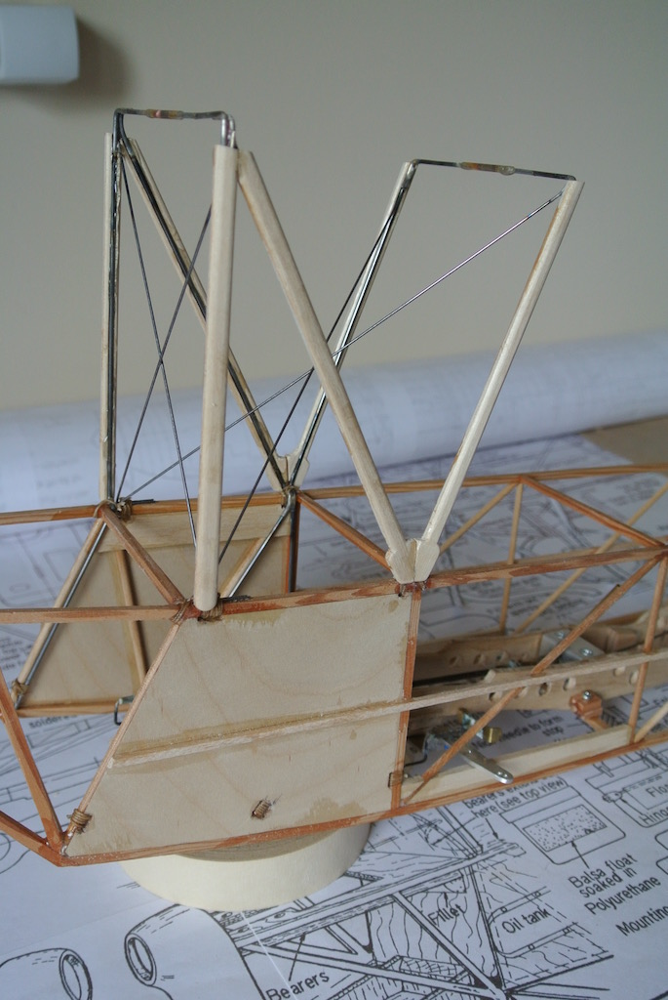Each side of the cabane required three peices of bent wire, which are then silver soldered together. The two assemblies are then joined by brass tube, again silver soldered. Finally, the structure is bound to the fuselage frame. I cut holes/slots in the side ply infill and used waxed twine to bind the wires to the longerons and uprights/diagonals. Finally I put thin CA over the bindings.
The bracing wires (made from 20 swg piano wire) are soldered to the top of the cabane and bound to the longerons. I had to look at photos of G-ANMY to work out where the bracing wires should actually fit.
With all the wires in place, the outer cabane wires were then covered with shaped strips of ply, each slotted on to the wire and epoxied in place. The slots were cut using a razor saw, openned with a tenor saw and then with the tapered end of a round needle file. Finally I used a piece of 16 swg wire, with the end filed flat, to shave the slot to the correct profile. This photo was taken in mid December!
Cowl
My first work on the Moth in 2017 is the front of the fuselage, where I added the engine plate and bearers and the front cowl. My intent is to build a motor mount that attatches to the engine plate and firewall. However, I've not yet chosen a motor, so don't know its dimensions. So I installed a basic plate and bearers (and the firewall), with the aim of cutting a hole in the plate when I have bought the motor. The two photos show the top and underside of the plate.
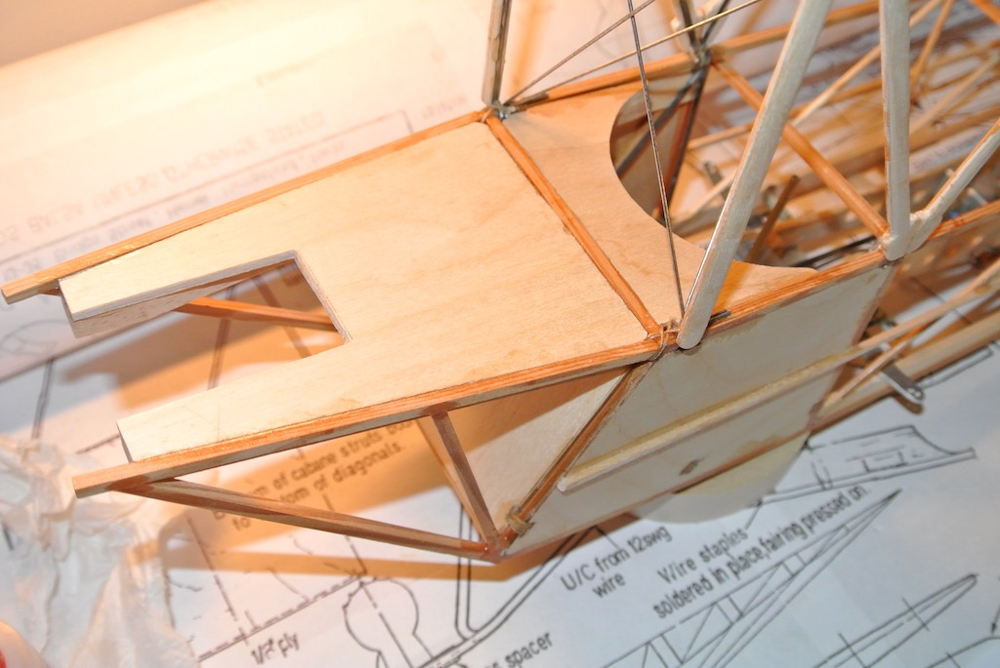 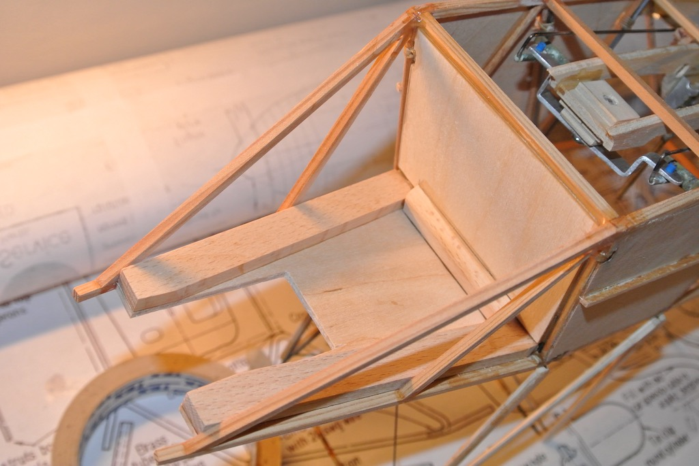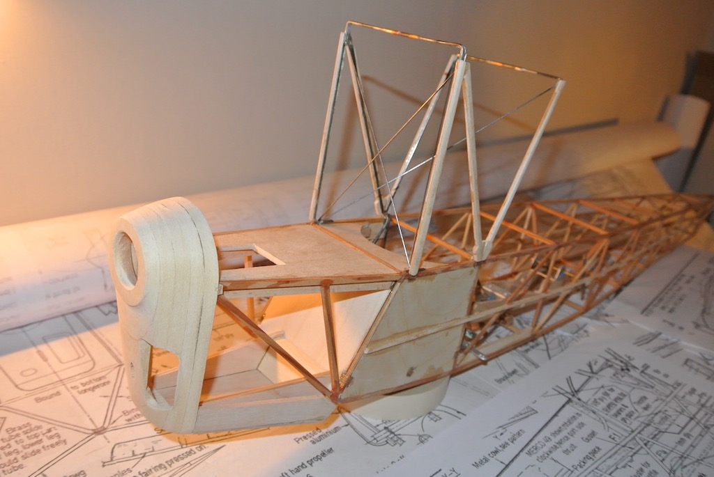Then I built the front cowl from five laminations of 1/4" obechi. The inner three laminations were in the form of 'rings' and the other two have a hole for the prop shaft. It took a lot of carving with a razor plane and a craft knife to get the shape.
I also built the floor of the engine compartment, adjusting it so that the front cowl lined up with the plan. In the photo you can see that I have 'tacked' the front cowl and engine floor in place so that I can remove them to cut the space for the motor and fit the motor mount.
Fuel Tank and Formers
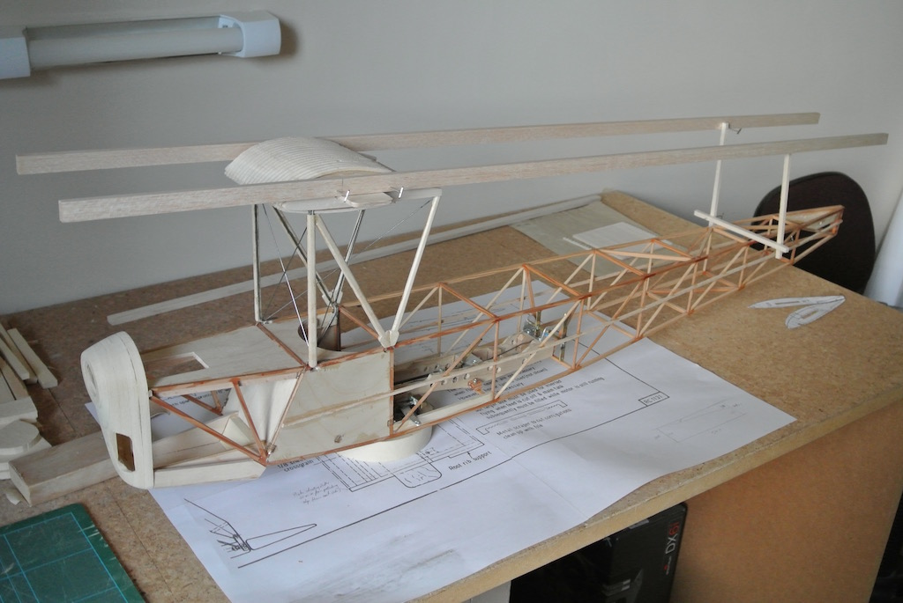The (dummy) fuel tank is fixed to the top of the cabane wires, but must be fixed parallel to the fuselage in both horizontal directions (so that the wing is at right angles to the fuselage) and at an angle of 4 degrees fore to aft (so that the top wing has the correct angle of attack). The photo shows the jig that I pinned together so as to keep the tank square and at the right angle. It did mean removing the binding holding the bracing wires to the fuselage and bending the cabane wires slightly so as to get the tank square.
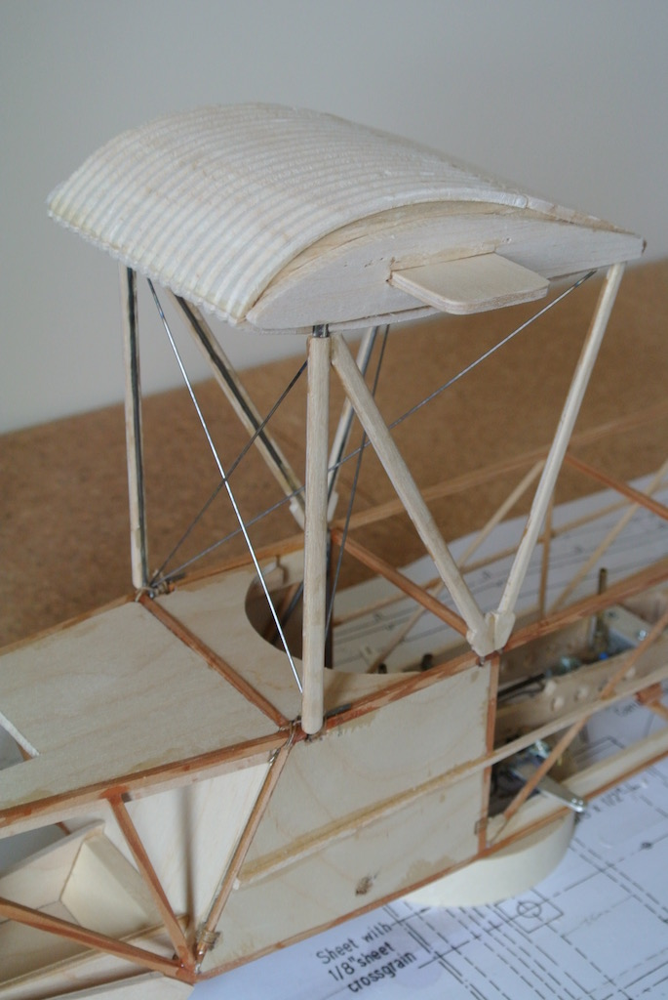The real tank is covered in corrugated steel, so I cut an aluminium scraper and gave sheets of balsa a corrugated effect. The tank frame was covered in this, leaving the rear edge uncovered until it had been fixed in place. I used some cotton cloth, glued with thin CA to the trailing edge and around the cabane wire. The front cabane wire fits into a slot and was packed with some offcuts of balsa. The rear section was then covered with 'corrugated' sheeting and the bracing wires bound as before. The photo shows the completed tank.
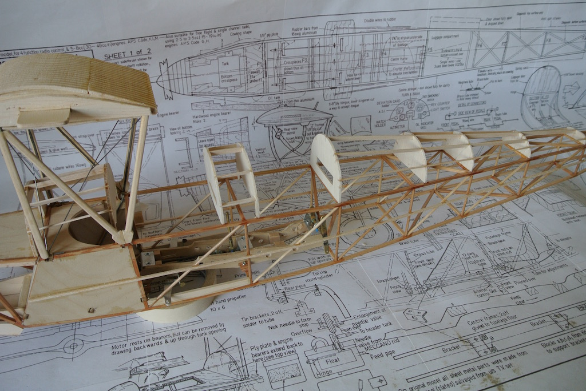Once the tank was in place I cut the fuselage formers. Since I plan to put the battery above the engine plate and back as far as the forward cockpit dash, and thus need to cut away quite a lot of the first former, I made that and the second former out of 1/8" ply. So as to get a straight line between the top of the front cowl and the second former I needed to adjust the height of the first former. I also had to make several adjustments of the remaining formers, both in their width (so that the sheeting will be flush with the longerons) and in the position of the cut-outs for the stringers (so that they run almost straight).The photo shows the formers and stringers in place before sheeting them. It isn't obvious from the photo, but the section aft of the rear cockpit only has stringers on the port side, since the starboard side will have a door into the luggage compartment, where I will mount the servos.
Servo Mounts
To be continued ...
Go to top